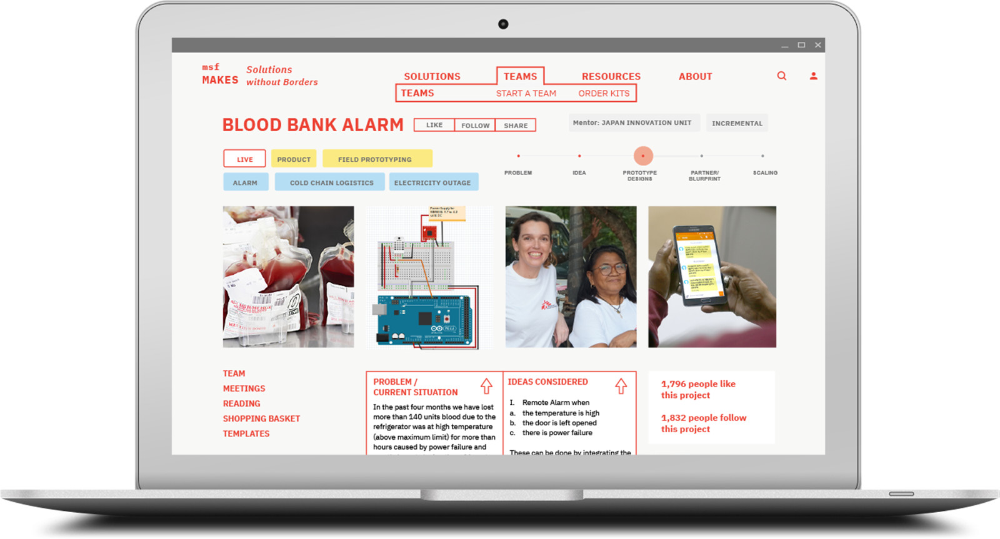
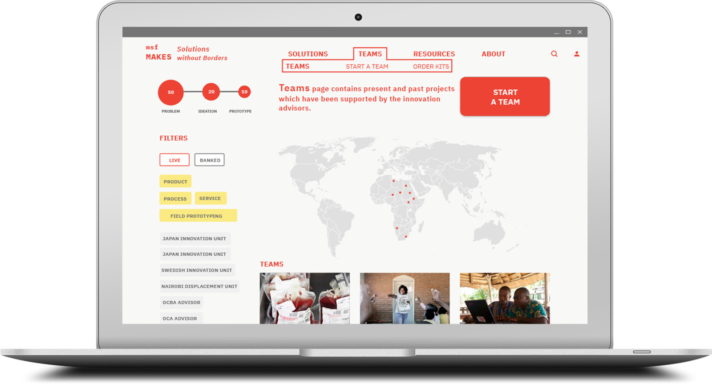
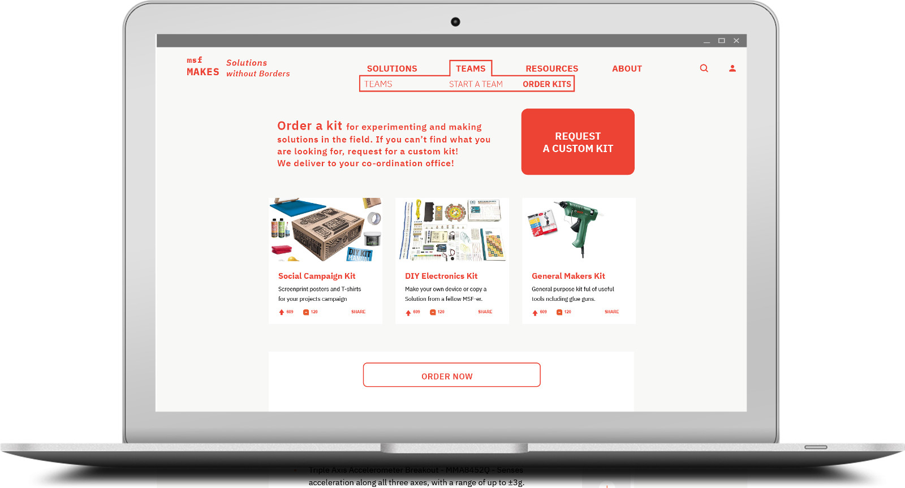
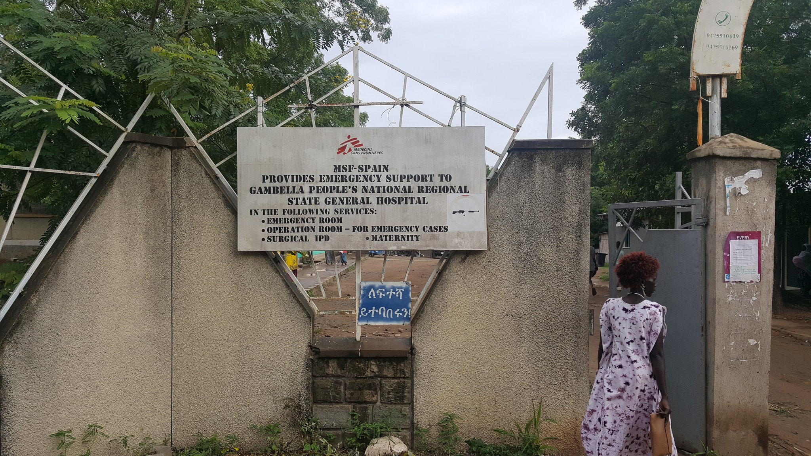
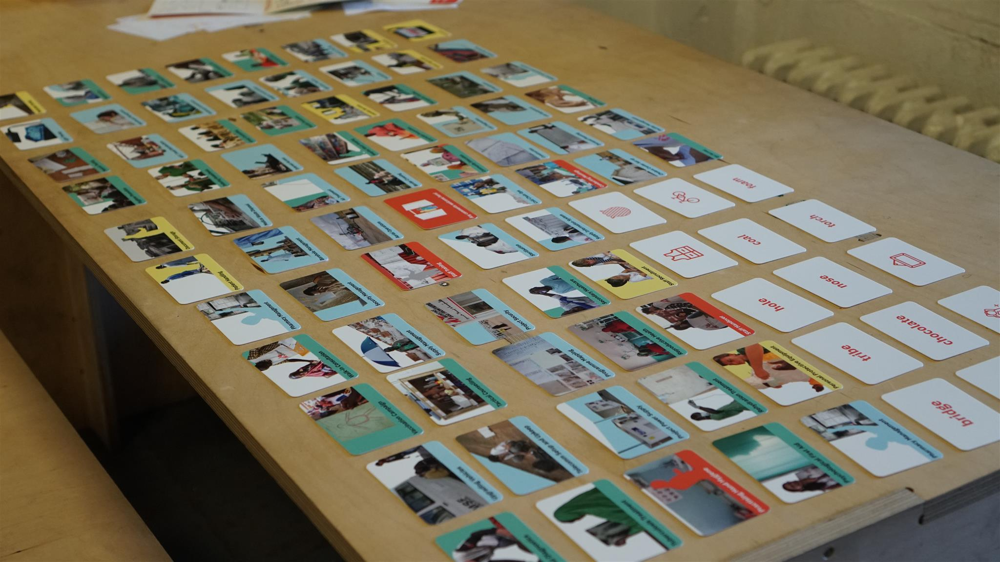
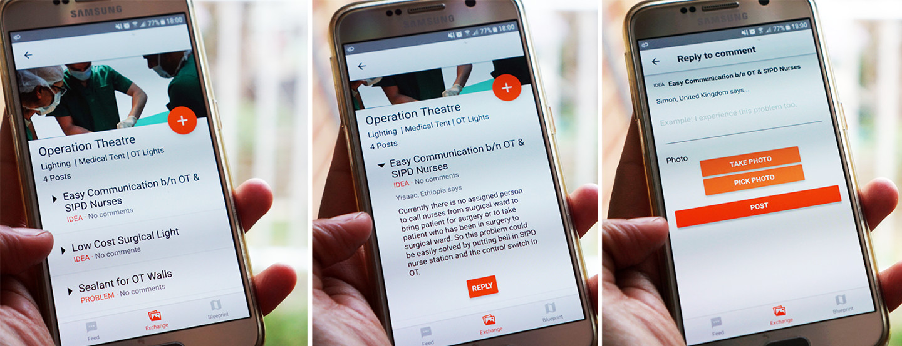
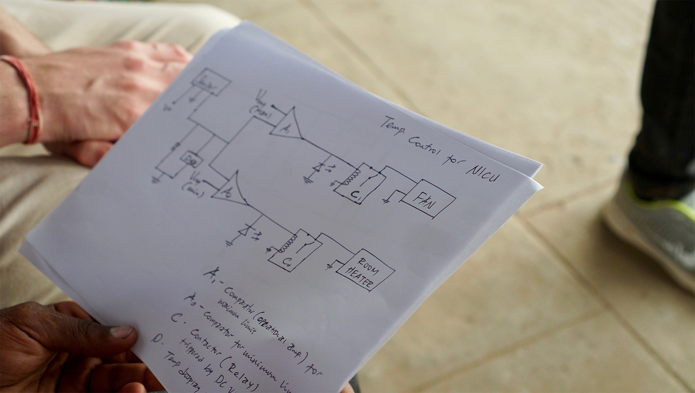

Designing a digital platform for cross-continental innovation for Medicine San Frontiers
Partner
Médecins Sans Frontières
Locations
Nairobi, Addis Ababa, Gambella, London, Amsterdam
Challenge
To design a digital innovation platform which engages busy doctors, nurses and logisticians in conflict/ emergency healthcare settings in 70 countries
Outcome
MSF Makes - a website where field teams with ideas can order rapid prototyping kits for in-field experimentation and feedback , paired with MSF Spots - a card game for de-briefings
An MSF supported hospital in Gambella, Ethiopia where we conducted research
An MSF supported hospital in Gambella, Ethiopia where we conducted research
An MSF supported hospital in Gambella, Ethiopia where we conducted research
Background
Médecins Sans Frontières (MSF) is an international humanitarian medical non-governmental organisation (NGO) comprised of doctors, nurses, logisticians, community health workers from 148 nationalities, working on delivering healthcare in conflict zones and in countries affected by endemic diseases. As of today they operate 478 projects across 70 countries.
An MSF supported hospital in Gambella, Ethiopia where we conducted research
MSF have been designing medical innovations in humanitarian situations since the 1970’s. As MSF has grown, the internal capacity to design new innovations has increased. Now MSF has 3 innovation units and several innovation advisors based in Japan, Sweden, Nairobi, Barcelona, London, Brussels and Geneva. There was a real desire from innovation units and advisors to democratise innovation and design a new digital space for field challenges to be solved creatively.
Process
We conducted research over 22 weeks in 5 phases in London, Amsterdam, Ethiopia and Kenya. We followed a multi-stage problem solving process by focusing on one stakeholder group’s needs and operating contexts at a time. Each round of ethnographic research result lead to insights, brought to life by a new rush of concepts.
In order to step into the busy lives of the brave 30,000 MSF staff we began collecting images of daily tasks and associated objects: doing the laundry, spreading a community health message which evolved into a set of 70 images providing a visual framework for innovation advisors to track their projects.
Cards with the collected 70 images
We started asking people about Innovation in MSF and learnt about field grown DIY projects like a non electric fridge, manual phase selector and how one can estimate population from an aerial map without GPS information. Quickly we realised that these “Instructables” would be helpful for MSF Staff across projects, possibly more so than the promise of longer term innovation.
Throughout the process, they continually prioritised and communicated key insights and decision points for the project team and the advisory group, even when these insights challenged fundamental, and often deep-rooted, assumptions we had made.
We prototyped an android app and website which had 2 sections:
“Blueprints” where step by step instructions for an innovative solution were shared. “Exchange” visual forums where staff could share problems, workarounds and ideas.
In our field trip to Kenya and Ethiopia, our initial card deck helped become a conversation starter for our workshops with the neonatal, maternity, IT and hospital management teams.
Interview with field staff
Over 8 days our app and website received 216 unique visits. Staff found “Blueprints” were tangible example of innovations and they wanted to see more of them!
Your examples of Blueprints are quite complex, but there are many many things which are small innovations which need to be on there as well.
In the “Exchange” section we collected over 51 submissions. On synthesis we found that half of the ideas proposed had potential to be quickly prototyped and experimented with the existing skill set at the project (electricians and general logisticians work alongside medical staff in MSF). Rapid prototyping is an incredibly effective way to make ideas tangible, to learn through making about whether something works or not.
Prototype mobile app used for testing
We had all the pieces of the puzzle for a good innovation project: the problems were important, and the staff enthusiastic to solve them, they had ideas and they had the required skill set. The only problem? Access to materials! specific materials required for prototyping were missing, due to consignments delivered being twice a year. We came up with the idea of lightweight makers kits being sent by innovation units for quick and useful prototyping in the field.
For example, there was an extreme shortage of blood which was compounded by the intermittent electricity (temperatures cannot be maintained in the safe zone). The hospital electrician had an idea for a blood bank alarm which sends an SMS incase temperature is at 6°C so that preventative measures can take place. For that they needed equipment worth only £200, but there was no was to get an Arduino and GSM shield. In order to test this approach, we sent materials for an Arduino based blood bank alarm to be assembled as per the design of the hospital engineer Yisak. The package has been sent and we await feedback from Yisak about the alarm.
A circuit diagram for another one of Yisak's ideas for keeping Neonatal Care Unit warm and ventilated.
Just as important as the kits it delivers is the wider intent of the MSF Makes website. The aim is for innovation advisors’s role within MSF to first facilitate for quick prototyping and experimenting within the field, second help iterate in-situ, third cross-pollinate the experiment via “blueprints” for other projects and finally scale the product/service if it is applicable to a wider context. We envision a space where innovation ventures ranging from services like NFI voucher programs to products like Ardunio Blood Bank Alarms and Charcoal Fridges can be supported side by side, in the field. If every innovation team supports one field project a month, there can be 80+ service/product prototypes tested in the field and feedback from the field can guide decisions to scale up ! We think this can lead to massive cross - organisational transformation.
We developed detailed design requirements and draft version of wireframes to deliver this.
In my opinion, their designs, prototypes and recommendations, alongside what we have learned from their approach have left us in a really strong position for the next phase of our project.